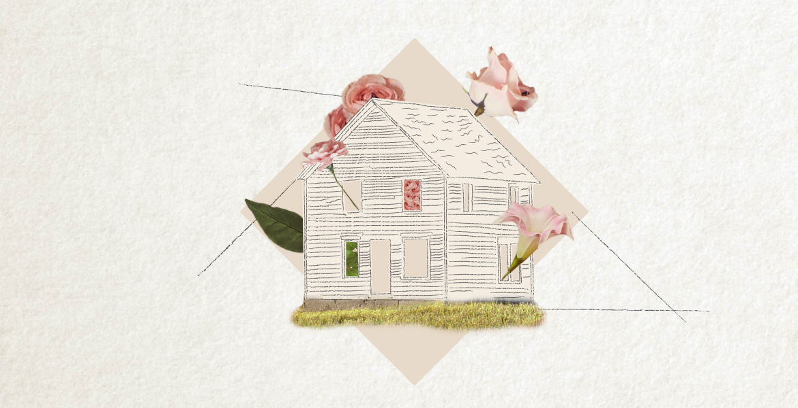

This up-tempo electropop track finds The Weeknd recounting how his lover lights up his life.

Here, Post Malone laments over a faded love that is running on empty.

Here, he talks about his gangsta life on the streets including his affiliation with Los Angeles gang, the Crips.

This disco-inspired track finds Dua Lipa full of positivity following a breakup

DaBaby and Roddy Ricch draw a parallel between their hip-hop gangster lifestyles and those of rock stars.

"Adore You" finds Harry Styles singing of his complete and absolute devotion towards a girl.
The clip also features cameos from the likes of 21 Savage, Lil Yachty, and Mike WiLL Made-It.

"Memories" is a sparse, reflective track in which Adam Levine looks back on the good times with a loved one while enjoying some drinks with friends.
